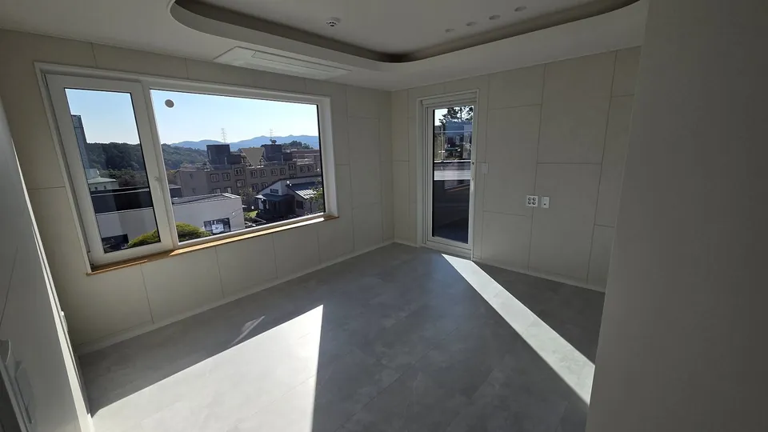
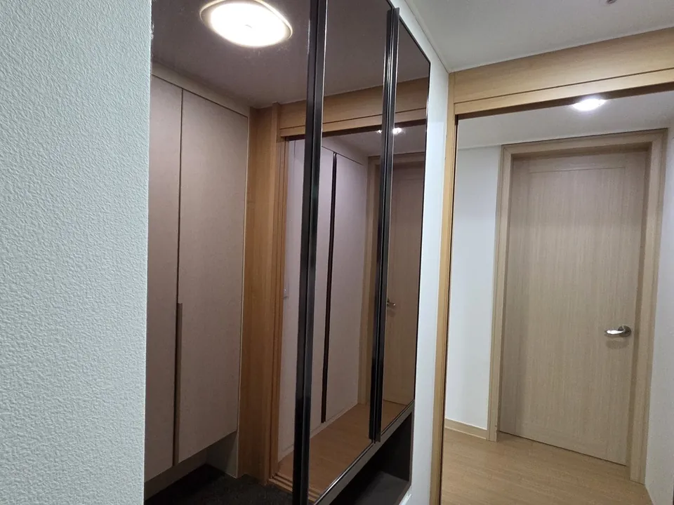
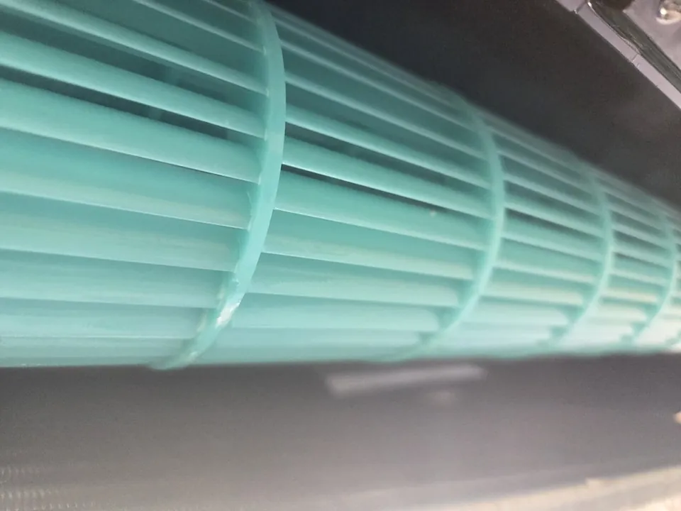

CLEANPASS세종 입주청소
입주 전 점검표,한 칸씩 통과시킵니다
청결함만 패스. 세종 클린패스는 더러움은 지우고 깨끗함만 남기고 갑니다. 서면 견적으로 시작해 체크리스트 검수로 끝나는 입주청소.
- 체크리스트로 마감 검수
- 견적서 · 계약서로 작업 범위 확정
- 추가요금은 기본 요금의 30% 이내

클린패스는 어떤 곳인가요?
클린패스는 세종시에서 입주청소와 이사청소를 하는 곳입니다. 상담한 작업 범위를 서면으로 남기고, 대표와 정직원이 하루 한 집만 맡아 청소한 뒤 체크리스트로 검수하고 고객님과 함께 확인합니다.
- 상호
- 클린패스
- 업종
- 입주 · 이사 청소
- 서비스 지역
- 세종 · 대전 · 공주 · 조치원
맡기기 전에 서면으로 받으시는 약속
상담 때 말로 끝내지 않고 종이로 남기는 것들입니다. 작업 날에는 이 약속대로 움직입니다.
- 견적서
작업 범위를 견적서로 먼저 정합니다
상담한 작업 범위 · 비용 · 추가 사항을 견적서에 적어 드립니다. 적힌 범위가 그날 청소할 범위입니다.
- 계약서
계약서는 한 부씩 나눠 보관합니다
견적서 내용을 계약서로 옮기고, 고객님과 클린패스가 같은 서류를 한 부씩 가집니다.
- 추가요금
기본 요금의 30% 이내
오염이 심해 추가 비용이 생겨도 30%를 넘기지 않고, 먼저 말씀드려 동의를 받은 뒤 진행합니다.
- 하루 한 집
그날은 한 집만 맡습니다
하청이나 일용직 없이 대표와 정직원이 직접 들어가고, 하루에 한 집만 청소합니다.
- 인증 사진
시작할 때 사진을 보내 드립니다
현장에 도착해 작업을 시작할 때 인증 사진을 보내 드립니다. 마감은 체크리스트 검수로 확인합니다.
클린패스가 하는 청소
청결함만 패스. 세종 클린패스는 더러움은 지우고 깨끗함만 남기고 갑니다. 서면 견적으로 시작해 체크리스트 검수로 끝나는 입주청소.
청결함만 패스.더러움은 지우고 깨끗함만 남기고 갑니다.
검수까지 다섯 단계
청소를 마친 뒤 체크리스트로 한 번 더 열어 보고, 고객님 확인을 받아야 끝납니다.
- 상담 · 서면 견적작업 범위와 비용을 견적서로 정합니다
- 현장 도착 · 인증 사진시작할 때 사진을 보내 드립니다
- 대표 직접 정밀 청소대표와 정직원이 하루 한 집만 맡습니다
- 체크리스트 검수공간마다 점검표를 다시 엽니다
- 고객 확인 · 마무리함께 둘러보고 마무리합니다
마감 검수표, 공간마다 다시 엽니다
현장 사진으로 남겨 온 칸입니다. 청소를 마치면 이 칸을 하나씩 다시 열어 보고 통과한 칸에만 표시합니다.
- 욕실곰팡이 · 물때
- 주방기름때 · 수납장 안
- 창 · 창틀창틀 레일 · 외창
- 붙박이장 · 거울장선반 안 · 거울 면
- 에어컨송풍구 안쪽
- 벽 · 바닥스티커 자국 · 낙서 · 바닥 오물
모든 칸을 통과한 뒤 고객님과 함께 확인합니다
공간을 고르면 그 칸을 보여 드립니다
검수표의 칸을 실제 현장 사진과 같이 봅니다. 사장님이 보내 주신 마감 후 사진이고 보정하지 않았습니다.

기름 닿는 곳과 문 안쪽까지
- 기름때
- 수납장 안
상판만이 아니라 수납장 문을 열어 안쪽 선반까지 검수표에 올립니다.

벽과 바닥에 남은 흔적
- 스티커 자국
- 낙서
- 바닥 오물
일반 청소로 잘 안 지워지는 스티커 자국 같은 오염도 맡습니다.

선반 안과 거울 면
- 선반 안
- 거울 면
붙박이장과 거울장은 겉면에서 멈추지 않고 선반 안까지 확인합니다.

송풍구 안쪽
- 송풍구 안쪽
겉면만 닦지 않고 바람이 나오는 송풍구 안쪽을 검수표 칸으로 둡니다.
검수를 마친 현장
사장님이 보내 주신 실제 현장 사진입니다. 보정하지 않았습니다. 사진을 누르면 크게 봅니다.
세 가지만 고르면 문자 내용이 준비됩니다
평형 · 서비스 · 희망 날짜를 고르면 보낼 문자가 미리 채워집니다. 이 화면은 아무것도 저장하거나 보내지 않습니다. 보내는 것은 휴대폰 문자 앱에서 직접 누르실 때입니다.